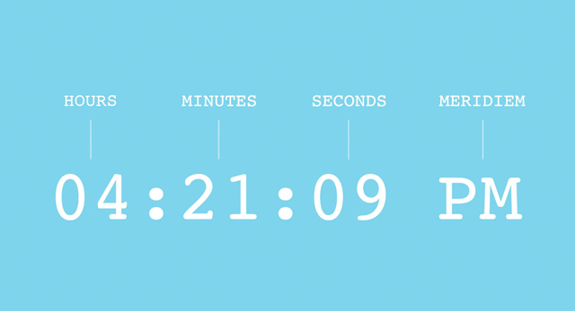
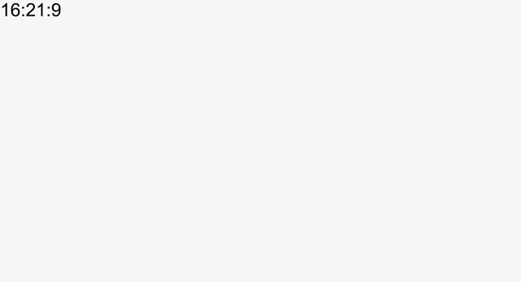
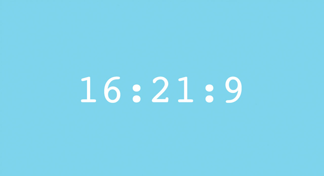
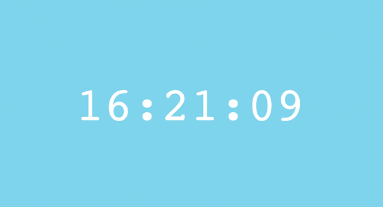

Download Complete Project 4k | .zip file
Download Complete Project 4k | .zip file
What time is it? You’ll finally be able to answer that question after you’ve built this simple clock.
A great project for: Punctual people, chronically-late people, or anyone that wants to turn their browser into a clock.
Making a clock might seem like a simple project but it requires a little Javascript programming knowledge. If you’ve never ventured into the JS tab on Coder you might want to start with a previous project.

This project will introduce you to Javascript, the JS tab and how to make your computer do some of the thinking for you.
Are you ready? Great. Create a new app. Call it whatever you want. We’ve called ours “Digital Clock”

Before we start writing any code, let’s think a little about the parts of a digital clock that we want to display. Time is generally broken up into three units: hours, minutes, and seconds. 12-hour clocks also separate a day into two parts: AM (which stands for ante-meridiem) and PM (post-meridiem). It seems pretty basic but understanding these units will give us the vocabulary we need to write our code.
Let’s start in the JS tab.
Our code looks like this:
Our code looks like this:
Now comes the cool part. We’re going to ask the computer the date and it’s going to store the answer in our currentTime variable.
Programming languages, like Javascript, have some basic information at the ready. To do their job they have to know things like how to do math, how long a second is, and what the time is. We can ask the computer for this information whenever we need it and allow it to do the hard work.
To get the current date and time we use the Date object. Add new Date(); after the “=”.
Our code looks like this:
When you see var currentTime = new Date(), you should think of it as create a variable called currentTime and set its value to a new Date object.
What we’ve done is ask the computer to fill our currentTime variable with the date and time as this exact moment, as soon as the function runs. It does that by taking the time from your computer’s own clock so if your computer’s time is wrong the date it stores will be wrong.
Now our currentTime variable is full of information. Lots of information. It calls up the exact year, month , day, hour, minute, second, and even the millisecond at that moment. We need to pull out just the hours, seconds, and minutes to build our clock. Fortunately, we can do that by writing three more variables that extract and store just those things.
Our code looks like this:
Now let’s fill that variable with just hours from our currentTime variable, to do that add the following text after the “=” currentTime.getHours();
getHours is what’s called a method and it can be used with Date objects. It does what it describes, it looks at the date object information and gets just the hours. Right now all the date information (including the hours) is inside currentTime so we need to apply getHours to currentTime to extract the hour information.
Our code looks like this:
Now we have a variable called hours that has our hours in it.
There are also methods for seconds and minutes. They’re getSeconds and getMinutes. Let’s create two variables below our var hours that pull out and hold the seconds and minutes from our currentTime variable.
Our code looks like this:
Now that we’ve got all the variables for our times, let’s write a function that puts them all together in a way that we can read them.
Let’s start by making a new line and writing a new variable.
This variable will let us set the hours, minutes, and seconds that will show inside our HTML. We’ve call ours clockDiv.
Our variable looks like this:
The reaason we called it clockDiv is that this variable will let our Javascript code connect with a DIV named "clock" that we'll eventually make in our HTML file. To make this connection, we use a function called document.getElementById() to retrieve a "handle" to a DIV with a specific ID. In this case, it's a DIV with the "clock" ID.
Our code looks like this:
getElementByID is kind of like getHours except instead of getting time information from our Date() object it scans our HTML document and finds an HTML element with a specific ID.
Once we have a handle to our DIV element in Javascript, we can set its contents to the current time. Let’s fill that HTML element with our hours, minutes, and seconds.
To do that we will use a method called innerText. innerText can set text inside an HTML element such as our clock DIV.
Make a new line of code and add clockDiv.innerText
No let’s write out the text that we want innerText to put inside our clock DIV element.
Our hours, minutes, and seconds variables are full of numbers already. We need to assemble them in order and format them a little so they make sense. We can link them up with + and use "" to turn these raw numbers into formatted text that contains the entire time, including the ":" characters that go in between the numbers or spaces.
In case you're wondering, programmers call text "strings," and combining several pieces of text together is called "concatenation". In case you're really wondering, integer numbers like -1, 0, 1, 2, and 3 are called "ints". And if you're really, really wondering, numbers with decimal points like 1.2, 0.005, and 3.14 are called "floats". There's a lot more you could read about this, if you're really, really, really wondering, but let's get back to making our clock.
Our code looks like this:
The last step before we go to our HTML page is to make the whole function run. So far we’ve only described what it does. We have to activate it. To do that we need to simply add the name of the function to the end of our code just before the last curly brace.
All our Javascript code looks like this:

We’ve been writing a bunch of code so far but we can’t see what it’s doing. Let’s change that.
Let’s make a place in our HTML for clockDiv to connect to and fill with our numbers.
Our body tag looks like this:
Now go back to the preview mode. See some numbers? That’s our clock! That’s what our code has made so far. It’s not perfect yet, though. We need to do some things to make it look more like a real digital clock.

The first thing we can do is style our clock text.
Remember how we gave the <div> an id? Let’s make a CSS #id that will make it look good.
You can style your clock however you want. We made ours big, white and in the middle of a blue screen.
Here's some CSS:
So our clock works and looks pretty good but something is missing. It isn’t ticking, it shows the current time the page loads, but doesn’t keep counting forward. Let’s fix that.
The reason our clock is frozen is that it is only running through the displayTime function once, when the page loads. We need to write some code to tell it to run every second.
setInterval(); is a method that will call a function repeatedly after a certain amount of time, measured in milliseconds. 1000 milliseconds is one second. Our function now runs every second. Just like a clock should.

We got our clock ticking but we still have a couple other problems. You might have to wait a minute to see this one.
For our digital clock to be legit we need all our numbers to be 2 digits all the time. Adding a zero in the front would solve that problem. Let’s write some logic that will fix that.
Remember how we said the Javascript can do math? It knows the value of numbers as well, and can determine if a number is greater, less than, or equal to another number.
Let’s start an if statement to add a “0” in front of numbers less than ten. We’ll start with our seconds variable since we can check that in less than a minute.
Within the displayTime() function braces, just after our hours, minutes, and seconds variables, make a new line.
Add this line of code:
Let’s take a minute to look at what that is doing. There are a few things here worth noting.
First, we're using an if statement to only do something if seconds is less than the number 10. We want 8 to become 08, but we don't want 14 to become 014.
Then, we modify the content of the seconds variable, placing a "0" in front of whatever was previously stored in seconds. You can change the content of a variable even after it's initially defined. That's why we call it a variable—because its content can vary.
Finally, and this is a tricky one, that plus (+) sign isn't adding 0 to seconds. If it were, basic math would tell us that we'd end up with the same thing. Note that we put quotes around our "0". Quotes mean text content, which we call a string, and strings work differently than numbers. When you use the plus (+) operator with a string, it combines two strings together, one after the other. If one of the properties is a string, like "0", and the other is a number, like our seconds variable was, the number will be converted into a string before the two are appended.
Take a look at the preview. You should eventually see it work with a “0” in front of our single digit seconds.
Go ahead and do the same thing for hours and minutes.
So we’ve got a nice looking digital clock. It’s got one last problem, though. It’s showing 24-hour time. Let’s make it a 12-hour clock and label AM and PM.
Let’s start by adding a new variable at the top of our code.
Our code looks like this:
Add this code:
Our code looks like this:
So what’s going on here? Like a lot of Javascript we can describe this in a sentence. It might sound something like this:
If the content of the variable hours is equal to zero (just past midnight) the change the content of hours to 12. Otherwise, if the content of the variable hours is greater than twelve (the afternoon) then subtract 12 and change the contents of the meridiem variable to “PM.”
Now we just need to add our new variable meridiem to our clock.
Add a space ( like this: “ ”) and + meridiem to that clockDiv.innerText assignment we created for our clock.
Our code looks like this:
And there you have it! We’ve just built a pretty sweet looking clock. Nice work.
Now that we know the time let’s see what else we can make our clock do.
What time is it in Tokyo? London? Sydney? Try making a wall of clocks, like a newsroom, that shows the time in different cities around the world. Try creating new functions that add or subtract hours from your current time.
Showing the time is great, but let’s see if we can use all that date information. See if you can use methods like getDay, getDate, getMonth, and getYear to make a daily calendar display.
Put your clock to work. See if you can make your clock do something attention getting, like change the background to eye catching color or an animated gif, when a certain time is reached.
Like programming with Javascript and making cool web things. Try some of these other Coder Projects

Drawing with code can be a walk in the park with the help of Javascript and the handy drawing library Two.js. In just a few lines of code your browser becomes your sketchbook.
Open Project
Got a story to tell? Have some great text and images you want to put together? This project will give you the pieces to turn them into a webcomic while teaching you some new skills along the way.
Open Project